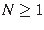

Perl tiene básicamente dos tipos de variables para contener datos: las que contienen un sólo valor y las que pueden contener más de uno.
$escalares
( scalars ), variables que contienen un sólo valor
o dato. Pueden ser cadenas
de caracteres, números enteros, números reales e incluso direcciones de memoria de otras variables.
@arreglos o o @vectores
(listas, vectores o arrays ), que contienen elementos,
que no tienen por qué ser del mismo tipo, que a su vez pueden ser otros arreglos,
pudiendo entonces representar matrices N-dimensionales (donde ). Permiten accceder a cada valor
por medio de subíndices o coordenadas en N. El primer valor de un arreglo tiene siempre subíndice 0.
%tablas_asociativas
( hashes ), que contienen parejas llave-valor. Estas tablas permiten
el acceso a los valores contenidos por medio de las llaves, que a su vez son escalares, por lo que
sólo pueden contener un valor para cada llave usada. Si se introducen dos parejas con la misma llave,
en la práctica sólo la última en asignarse es almacenada.
Un caso algo especial son las referencias , las direcciones en la memoria del computador que ocupan las variables, dadas en hexadecimal por comodidad.
A pesar de esta flexibilidad, el intérprete sí lleva un control de contexto sobre las variables y protestará si intentas aplicar, por ejemplo, una función de arreglos sobre un escalar.
En ocasiones el intérprete no puede decidir qué tipo de datos está manejando y es necesario que el
usuario diga explícitamente en qué contexto deben evaluarse, usando
${},@{},%{}
en torno a la variable en cuestión.
Por cierto, las variables que declaréis en Perl deben comenzar por una letra o un subrayado, como en
$_variable.